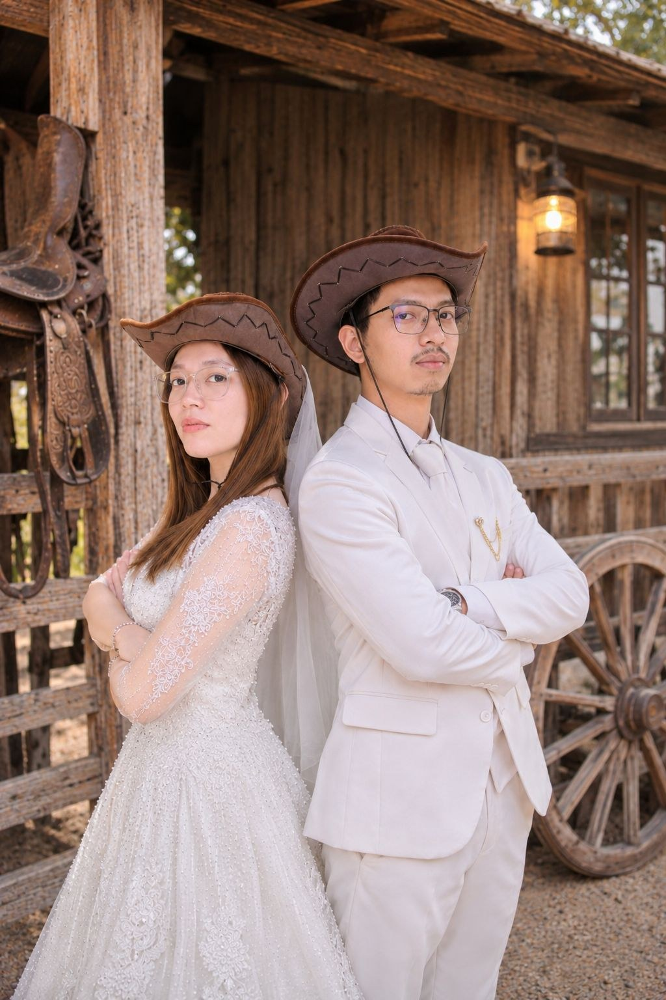

Syahrifah
Mempelai Wanita
Dengan penuh rasa syukur, kami berbagi kabar bahagia.
Dengan memohon rahmat dan ridha Allah SWT, kami ingin membagikan kabar bahagia pernikahan kami.

“Dan di antara tanda-tanda kekuasaan-Nya ialah Dia menciptakan pasangan-pasangan untukmu...”
QS. Ar-Rum: 21
Mempelai Wanita
Mempelai Pria
Waktu: Mohon konfirmasi jam akad
Jl. Jend. D.I. Panjaitan No. 162,
Sei Sikambing D, Kec. Medan Petisah,
Kota Medan, Sumatera Utara 20111
Prosesi akad nikah akan dilaksanakan secara sederhana dan terbatas bersama keluarga serta kerabat terdekat, tanpa penyelenggaraan resepsi pernikahan.
Melalui halaman ini, kami ingin menyampaikan kabar bahagia sekaligus memohon doa restu dari keluarga, sahabat, dan orang-orang terkasih.
Apabila berkenan memberikan tanda kasih, dapat disampaikan melalui rekening berikut. Kehadiran doa dan perhatian Anda sangat berarti bagi kami.
Terima kasih atas kasih sayang dan perhatian yang diberikan.
Merupakan kebahagiaan bagi kami menerima doa restu dari Anda. Semoga Allah SWT senantiasa melimpahkan keberkahan untuk kita semua.